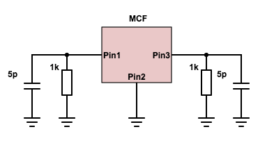
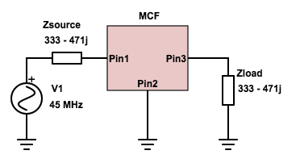
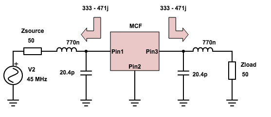
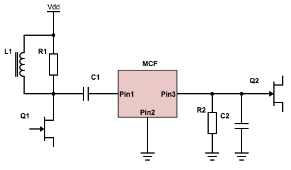
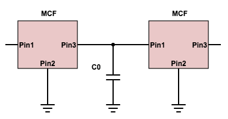

To match an MCF to a specific source/load impedance, the following needs to be done:
MCFs need to be terminated with a proper load to work correctly. MCF datasheets usually specify the termination load as resistance parallel to capacitance (R || C). This needs to be converted to series form R_t + jX_t. It can be done by hand (very cumbersome), or there are online calculators that can do it. Just make sure to specify the working frequency of the MCF.
For example, the datasheet says termination load 1000 ohm || 5 pF. Thus an ideally terminated MCF would look so:
At 45 MHz this means a 1000 ohm resistance in parallel with a -1j/(2pi*45MHz*5pF) = -707j ohm reactance. Using parallel circuit formula Z = Z_1*Z_2 / (Z_1+Z_2), the termination impedance is Z = 1000*(-707j)/(1000-707j) = 333 - 471j.
MCFs are symmetric (input and output can be exchanged with no difference theoretically), which means that on both input and output it should "see" the termination load:
This means our example can be represented like this:
Our signal source has a source impedance of 333-471j ohms, which means that the input impedance of our MCF is 333+471j - note the change of sign in reactance (this follows from matching theorem). The same applies to the output of our MCF, the output impedance is 333+471j (as seen from the load, that is, considering the output of the MCF as signal source itself).
To match the MCF to a different source or load impedance, a matching network is required. Matching can be achieved with resistors, however, this way there will be a power loss and increased noise. A lossless match (theoretically) can be achieved by a network consisting of inductors and capacitors. There are several topologies that also provide a lowpass, highpass or even bandpass filtering effect; for examples, see LC matching network designer.
The devil is in the details. The specified termination load (and thus the impedance that MCF presents to our matching network) refers only to the passband. Outside the passband, impedance can change very wildly. The matching network will transform it to some other impedance, and here the choice of one or another matching network might make a difference.
To match our example MCF with a 50 ohm signal source, we can use a matching network designer with source impedance of 50 ohms and load impedance of 333+471j ohms. If our expected load is also 50 ohms, we can reuse the same matching network in reverse (symmetric to input). Here we choose a simple lowpass matching network since for most cases lowpass behaviour is the better option:
The MCF can be put between two amplifiers with a known input/output impedance by using same matching technique described above. However, in some cases it's possible to simplify the schematic even more. For example:

Note that this way there might be some power lost due to using resistive elements to define input/output impedance.
Typically a single MCF is a second order filter. However, two MCFs can be chained together to obtain a fourth order filter with steeper bandpass response. Sometimes MCFs are sold in pairs of two with the intention to combine them into a fourth order MCF. The output of one MCF can be connected to the input of another MCF with a small coupling capacitor to the ground. The value of this capacitor is specified in the datasheet.
The nice news is that the input/output impedance of such combined filter will still be the same as in the original case, so the same calculations apply. The chain can be continued for more identical MCFs the same way.